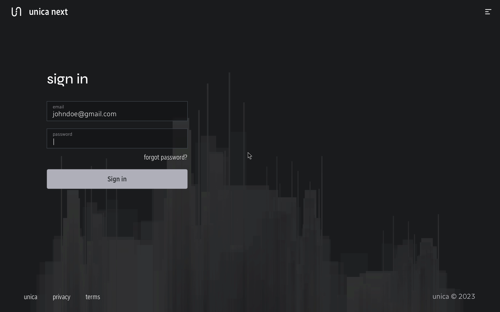
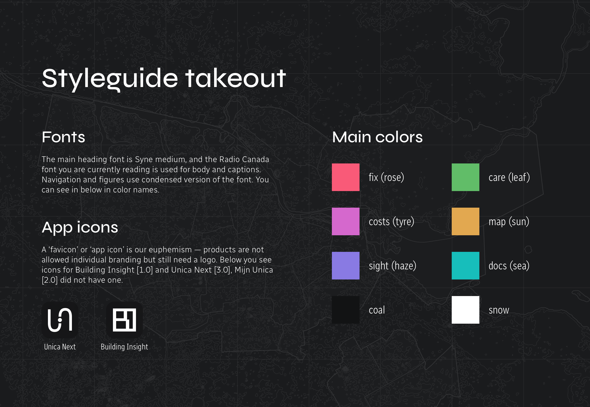
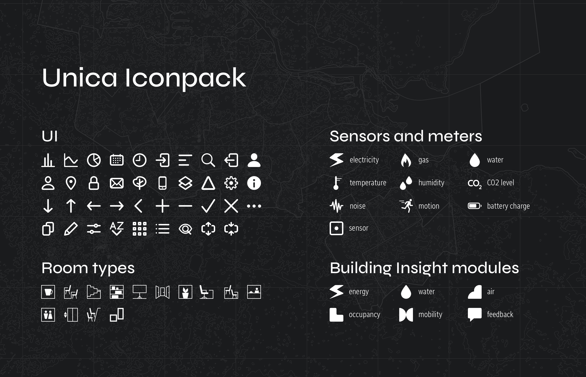

Interaction design
The last concept I made for Unica's intelligent building platform before leaving the project. Version 3.0 was intended to fulfill my vision: combine all tools into one platform and organize them according to users’ tasks.

Previous versions: Building Insight [1.0] and Mijn Unica [2.0].
Unica Next is designed for building managers and their Unica consultants. The platform is intended to be divided into the following tools (or modules) according to users’ tasks:
The core concept of the design is 'no stock photos, only meaningful illustrations': for every context, there is a data visualization or a digital twin element (such as an interactive map) that can be used to enhance visual appeal.
Thanks to the Unica team’s articulated vision for the future, it was possible to incrementally refine the design system across versions. The current typography was introduced in Mijn Unica [2.0]. Many foundational elements, such as controls, inputs, and various data visualizations, have been retained from Building Insight [1.0] with only minor changes. The original icon pack, shown below, was created around the same time and has been utilized across other Unica products I worked on.

